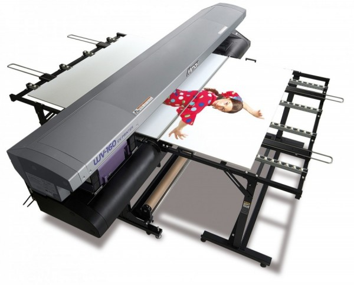

"GEORGE KK Signs and Engraving” was established in 1987 as "IAN REED ENGRAVING" and has more than 30 years of experience working with the most up-to-date technology available. Starting with manual engraving machines, developing into modern technology with design cad and co-operating with “Interlab Robotics’ ” routing machines.
We have built a commitment to you for a continuation of high quality products and workmanship to the standards that our customers anticipate. Digital printing and signage is our latest venture. Reinforcing our business with the revolutionary UJV-160 large format inkjet ultraviolet printer for rigid materials up to 10 mm thickness, we have given our customers a multitude of choice for their convenience. Once more the response was excellent as expected.
High quality, inspirational designs and fast turnaround still are our trade mark. Not long after, the new arrival of MIMAKI CJV30-160 print and cut, is moving our quality forward, giving our customers one more reason to trust GEORGE KK and bring our efficiency to the best possible level.
Finally after a long time of hard work and positive remarks on TESTIMONIAL tab, we can proudly state that we set the standards for: Efficiency Willingness and Reliability